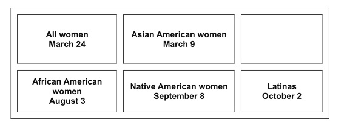

Over half a century after pay discrimination became illegal, a persistent racial and gender wage gap still exists in the United States.
Project by Maddie Stelk
Even though the Equal Pay Act was signed back in 1963, the gender wage gap has been closing at a slow rate– and for the past 25 years, the has been taking a stand.
March 24th, 2021 was Equal Pay Day, which symbolizes how far into the year a woman must work to earn the equivalent amount of wages that men earned in the previous year. This holiday, created by the National Committee On Pay Equity, is meant to spread public awareness of the gender wage gap in a numerically shocking and symbolic way.
What makes the holiday a reality is the annual Census data that reveals the median earnings of full-time, year round male and female workers, which the NCPE uses to determine what day and month Equal Pay Day falls on. In a section on their website, the NCPE say their gender wage gap figure is an aggregate.
“It does not show men and women doing the same work or in the same jobs. But it does show changes over time, with progress in narrowing the gap in the 1990s and little change in this century.”
Furthermore, the Committee said that the Census data proves time and time again that the gender wage gap still persists. Through an analysis of the Census data presented, one can determine the significant difference between the median earnings for full time, year round female workers versus full time, year round male workers. The raw data was collected through the Current Population Survey Annual Social and Economic Supplements (CPS ASEC), conducted by the U.S. Census Bureau.
But an analysis of the first dataset (compiled by Maddie Stelk) also shows the progression that the U.S. has made towards gender equality and the equal pay act over the past few decades. For instance, between 2007 and 2019, the number of full-time, female workers increased by 14 percent while the number of full-time, male workers increased by only 7 percent. This change can be partially attributed to the normalization of females entering the workforce and, in some cases, being the ‘breadwinners’ of the household. Additionally, since the last recession in 2007, the female to male earnings ratio has increased by almost 6 percentage points, meaning that the amount of cents women make is trending upward and closer each year to every dollar earned by men.
It’s important to take into account, however, that in 2019, women only earned 82 cents for every dollar earned by men. Even with the Equal Pay Act that was signed almost 60 years ago, there is still a significant discrepancy of median male and female earnings presently.
Leslie Malone, a U.S. Census Public Affairs Specialist said in an email that the findings in this data analysis are correct, but emphasized that there is more than just one layer to the gender wage gap issue.
“While the main purpose of the survey is to collect information on the employment situation of both males and females, there is also a very important secondary purpose,” she said. The secondary purpose is to collect information on the demographic status of the population, information such as age, sex, race, marital status, educational attainment, and family structure.”
Malone explained that when analysing the wage gap, it is also important to recognize that the wage gap exists partially because many women and people of color are still segregated into a few low-paying occupations.
This is where the second dataset (compiled by Maddie Stelk), comes into play, which shows the number of median earnings in the past 12 months in 2019 inflation-adjusted dollars of workers by sex and womens earnings as a percentage of men’s earnings by selected characteristics, but more specifically, by race. An analysis of this dataset shows that Asian-American women have had the highest median earnings compared to other females in different racial categories, followed by white women.
Studies show that the more women or people of color who dominate a certain job, the less it pays. Even though this is partially due to differences in education, experience, and years in the workforce, the General Accounting Office's Oct. 2003 report "Women's Earnings," showed that the much of the gender wage gap cannot be explained by those factors: through the examination of 18 years of data, the Office found that a 20 percent earnings gap between males and females was unexplainable, even when taking demographic and work-related factors into account. The NCPE said that the gender and racial pay gap is attributable to discrimination.
“Certain jobs pay less simply because they are held by women and people of color. Pay equity—evaluating and compensating jobs based on their skill, effort, responsibility and working conditions, and not on the people who hold the jobs—is a solution to eliminating wage discrimination and closing the wage gap.”
The NCPE goes as far as to hold equal pay days by designated groups. In 2021, the equal pay days symbolize how far into 2021 women in the designated groups have to work to earn what white men earned in 2020. In correlation with the U.S. Census data, the pay day for Asian American women is earlier than that of all women.
Credit: National Commitee On Pay Equity
The National Committee on Pay Equity offers a variety of ways on how to take action, whether you are an employer, advocate, or working woman:
Businesses can reflect and evaluate their pay practices to determine if they treat all employees equally. Oftentimes, employers fail to realize that their pay scales systemically favor white men.
Individuals can contact their house representitive and senators to advocate the importance of fair pay. Information to do so is provided here. Individuals can also join or form WAGE clubs, which are groups that mobilize groups of women to discuss the wage gap and how to work towards closing it. You can learn more by clicking here.
Leslie Malone: Malone is a public affairs specialist in the U.S. Census Bureau's Public Information Office, Media Relations Branch. She is responsible for providing customer support to members of the media and facilitating the composition and dissemination of press releases, tip sheets, and other media products
The National Committee of Pay Equityis a coalition of women's and civil rights organizations, whose purpose is to close the wage gap that still exists between women, as well as people of color, and men.
This project was produced by Maddie Stelk for JNL221 in the fall of 2021.